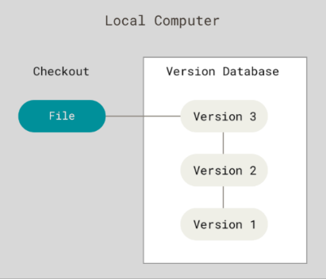
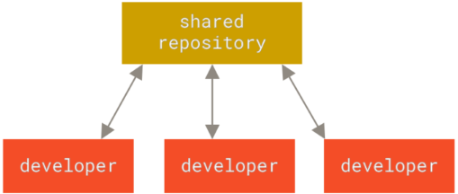
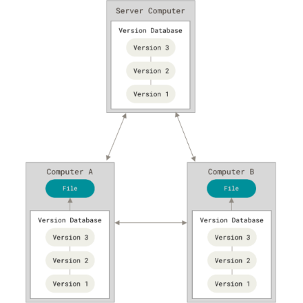

𝜗ৎ Version Control System
Version Control System, disebut juga revision control system atau source code management adalah sistem yang mengelola perubahan dari sebuah dokumen program computer, website dan kumpulan informasi lain.
Jenis-jenis Version Control System:
- Local Version Control System 
- Centralized Version Control System 
- Distributed Version Control System (DVCS) 
𝜗ৎ Fungsi Version Control System
- Tracebility: mekanisme yang menyediakan bukti semua revisi dan perubahan yang dilakukan dalam satu periode waktu.
- Efficiency: Version control mendorong pengembangan dokumen yang efisien.
- Riwayat Dokumen: Riwayat dokumen memberikan informasi yang sangat berharga tentang editor beserta tanggal pengeditannya.
- Branching dan Merging: Version Control memungkinkan anggota tim untuk mengerjakan dokumen yang sama secara bersamaan secara independen sehingga tidak akan memengaruhi kontribusi sesama kolaborator.
- Pengurangan Duplikasi dan Kesalahan: Version Control dapat mengurangi duplikasi beberapa versi atau versi yang sudah ketinggalan zaman dari dokumen tertentu
- Management Overview: Version Control memungkinkan manajemen untuk memperoleh perspektif yang komprehensif tentang perkembangan proyek.
- Identitas: Version Control memungkinkan tim untuk menganalisis penghapusan, pengeditan, dan pembuatan kumpulan data yang dibuat setelah dibuatnya salinan asli.
𝜗ৎ Git
Git adalah distributed version control software system yang mampu menangani perubahan dari source code atau data. Terdapat tiga keadaan utama:
- Modified: berkas telah diubah namun belum men-commit-nya ke database.
- Staging: file yang diubah pada versi saat ini telah ditandai untuk direkam pada commit selanjutnya.
- committed: data telah secara aman disimpan di lokal database.
𝜗ৎ Github
Github adalah sebuah platform yang memungkinkan developer untuk membuat, menyimpan, mengatur serta membagikan kode yang dibuat.